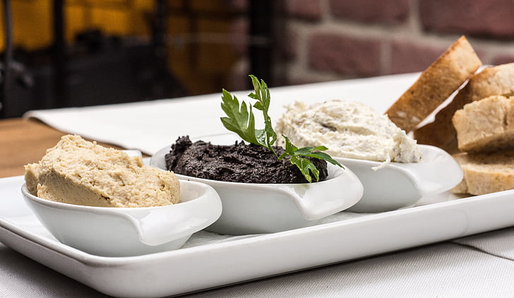

Indulge in the exquisite flavors of our restaurant's signature olive oil spread, meticulously crafted with the finest ingredients and a touch of culinary expertise. This is a really simple dish to prepare and It's always a big hit at parties. My father recommends:
"Make this the night before so that the flavors have time to blend. Just bring it up to room tempreature before you serve it. In the winter, try serving it warm."